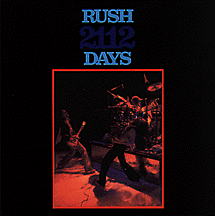

2112 DAYS
Elements of Crime
elements-006
(73:20)
Recorded:
October 25, 1976
Paramount Theater. Seattle, WA
Track Listing:
Bastille Day || Anthem || Lakeside Park || 2112 || Fly By Night/In The Mood ||
Something For Nothing || In The End || By-Tor & The Snowdog || Working
Man/Finding My Way/Working Man/drum solo || Best I Can
Sound Quality: ?
Packaging: ?
Reviewing it later tonight.. ;-)